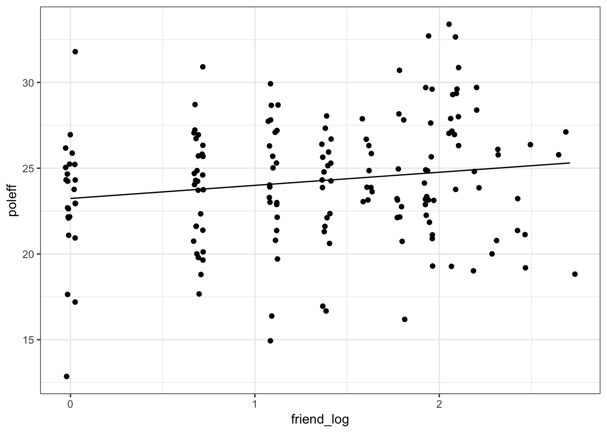
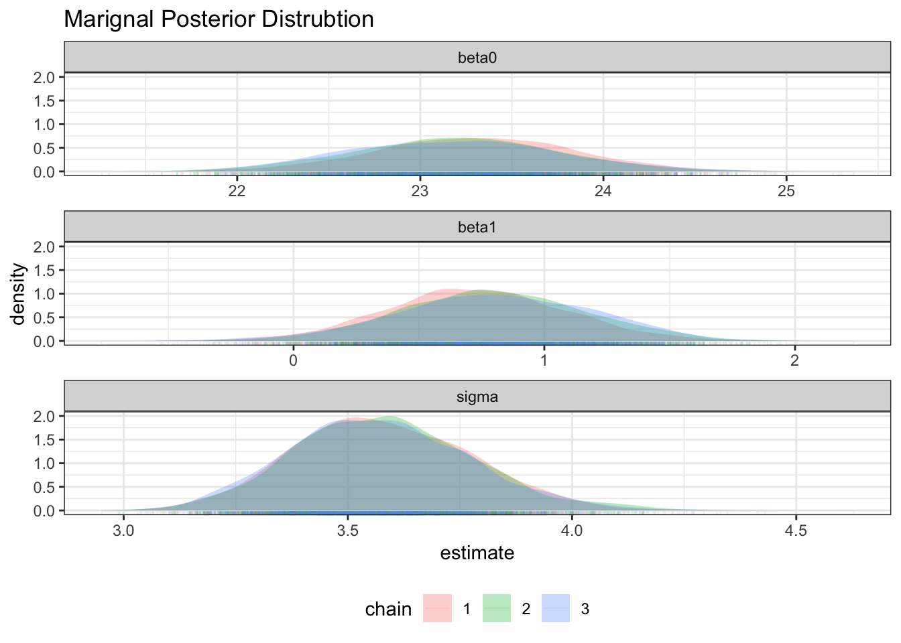
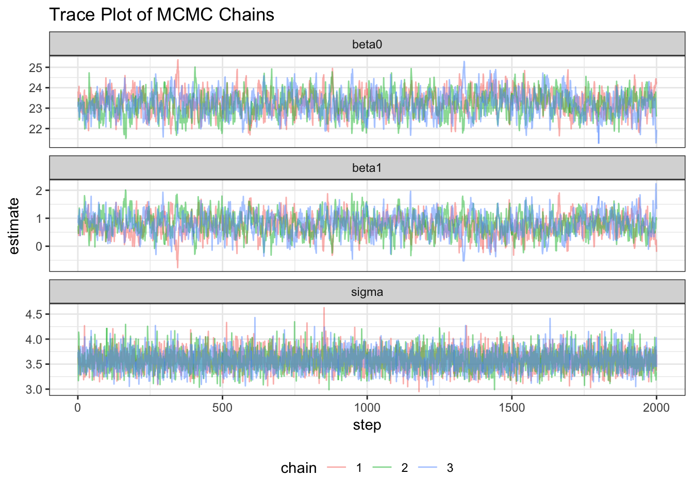
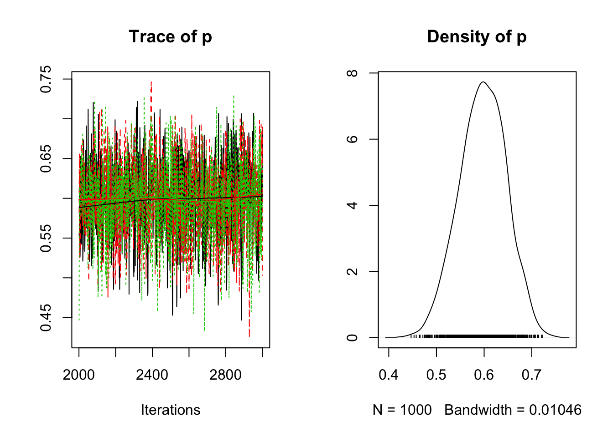
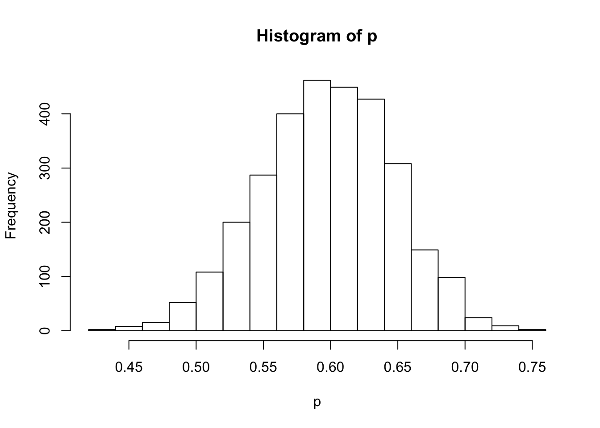

Lab Session 5
- posterior correlated := autokorrelation or multicolinearity.
Packages
pacman::p_load(rjags, dplyr, purrr, tidyr, ggplot2, broom, rjags)
ggplot2::theme_set(theme_bw())
# tinytex::install_tinytex()
devtools::session_info()## ─ Session info ──────────────────────────────────────────────────────────
## setting value
## version R version 3.5.1 (2018-07-02)
## os macOS High Sierra 10.13.6
## system x86_64, darwin15.6.0
## ui X11
## language (EN)
## collate en_US.UTF-8
## ctype en_US.UTF-8
## tz Europe/Berlin
## date 2018-11-21
##
## ─ Packages ──────────────────────────────────────────────────────────────
## package * version date lib source
## assertthat 0.2.0 2017-04-11 [1] CRAN (R 3.5.0)
## backports 1.1.2 2017-12-13 [1] CRAN (R 3.5.0)
## base64enc 0.1-3 2015-07-28 [1] CRAN (R 3.5.0)
## bindr 0.1.1 2018-03-13 [1] CRAN (R 3.5.0)
## bindrcpp 0.2.2 2018-03-29 [1] CRAN (R 3.5.0)
## broom * 0.5.0 2018-07-17 [1] CRAN (R 3.5.0)
## callr 3.0.0 2018-08-24 [1] CRAN (R 3.5.0)
## cli 1.0.1 2018-09-25 [1] CRAN (R 3.5.0)
## coda * 0.19-2 2018-10-08 [1] CRAN (R 3.5.0)
## colorspace 1.3-2 2016-12-14 [1] CRAN (R 3.5.0)
## crayon 1.3.4 2017-09-16 [1] CRAN (R 3.5.0)
## desc 1.2.0 2018-05-01 [1] CRAN (R 3.5.0)
## devtools 2.0.1 2018-10-26 [1] CRAN (R 3.5.1)
## digest 0.6.18 2018-10-10 [1] CRAN (R 3.5.0)
## dplyr * 0.7.8 2018-11-10 [1] CRAN (R 3.5.0)
## evaluate 0.12 2018-10-09 [1] CRAN (R 3.5.0)
## fs 1.2.6 2018-08-23 [1] CRAN (R 3.5.0)
## ggplot2 * 3.1.0 2018-10-25 [1] CRAN (R 3.5.0)
## glue 1.3.0 2018-07-17 [1] CRAN (R 3.5.0)
## gtable 0.2.0 2016-02-26 [1] CRAN (R 3.5.0)
## htmltools 0.3.6 2017-04-28 [1] CRAN (R 3.5.0)
## knitr 1.20 2018-02-20 [1] CRAN (R 3.5.0)
## lattice 0.20-35 2017-03-25 [1] CRAN (R 3.5.1)
## lazyeval 0.2.1 2017-10-29 [1] CRAN (R 3.5.0)
## magrittr 1.5 2014-11-22 [1] CRAN (R 3.5.0)
## memoise 1.1.0 2017-04-21 [1] CRAN (R 3.5.0)
## munsell 0.5.0 2018-06-12 [1] CRAN (R 3.5.0)
## nlme 3.1-137 2018-04-07 [1] CRAN (R 3.5.1)
## pacman 0.5.0 2018-10-22 [1] CRAN (R 3.5.0)
## pillar 1.3.0 2018-07-14 [1] CRAN (R 3.5.0)
## pkgbuild 1.0.2 2018-10-16 [1] CRAN (R 3.5.0)
## pkgconfig 2.0.2 2018-08-16 [1] CRAN (R 3.5.0)
## pkgload 1.0.2 2018-10-29 [1] CRAN (R 3.5.0)
## plyr 1.8.4 2016-06-08 [1] CRAN (R 3.5.0)
## prettyunits 1.0.2 2015-07-13 [1] CRAN (R 3.5.0)
## processx 3.2.0 2018-08-16 [1] CRAN (R 3.5.0)
## ps 1.2.1 2018-11-06 [1] CRAN (R 3.5.0)
## purrr * 0.2.5 2018-05-29 [1] CRAN (R 3.5.0)
## R6 2.3.0 2018-10-04 [1] CRAN (R 3.5.0)
## Rcpp 1.0.0 2018-11-07 [1] CRAN (R 3.5.0)
## remotes 2.0.2 2018-10-30 [1] CRAN (R 3.5.0)
## rjags * 4-8 2018-10-19 [1] CRAN (R 3.5.0)
## rlang 0.3.0.1 2018-10-25 [1] CRAN (R 3.5.0)
## rmarkdown 1.10 2018-06-11 [1] CRAN (R 3.5.0)
## rprojroot 1.3-2 2018-01-03 [1] CRAN (R 3.5.0)
## scales 1.0.0 2018-08-09 [1] CRAN (R 3.5.0)
## semantic.doc 0.0.0.9000 2018-11-20 [1] local
## sessioninfo 1.1.1 2018-11-05 [1] CRAN (R 3.5.0)
## stringi 1.2.4 2018-07-20 [1] CRAN (R 3.5.0)
## stringr 1.3.1 2018-05-10 [1] CRAN (R 3.5.0)
## tibble 1.4.2 2018-01-22 [1] CRAN (R 3.5.0)
## tidyr * 0.8.2 2018-10-28 [1] CRAN (R 3.5.0)
## tidyselect 0.2.5 2018-10-11 [1] CRAN (R 3.5.0)
## usethis 1.4.0 2018-08-14 [1] CRAN (R 3.5.0)
## withr 2.1.2 2018-03-15 [1] CRAN (R 3.5.0)
## yaml 2.2.0 2018-07-25 [1] CRAN (R 3.5.0)
##
## [1] /Library/Frameworks/R.framework/Versions/3.5/Resources/libraryBayes Regression: Student Survey
Data
dat <- get(load("data/Bayes_Student_Survey.RData")) %>%
mutate(friend_log = log(friend + 1))
glimpse(dat)## Observations: 165
## Variables: 18
## $ id <dbl> 1, 2, 3, 4, 5, 6, 7, 8, 9, 10, 11, 12, 13, 14, 1...
## $ male <dbl> 1, 0, 1, 0, 1, 1, 1, 1, 0, 0, 0, 0, 0, 1, 0, 0, ...
## $ friend <dbl> 5, 4, 6, 6, 0, 6, 9, 0, 0, 2, 0, 0, 9, 4, 1, 1, ...
## $ poldisc <dbl> 7, 2, 1, 1, 0, 7, 3, 0, 0, 2, 0, 0, 11, 4, 0, 1,...
## $ poleff <dbl> 25, 23, 23, 22, 23, 26, 26, 22, 21, 28, 13, 24, ...
## $ lr.self <dbl> 2, 3, 8, 5, 8, 4, 6, 5, 7, 5, 6, 7, 2, 6, 5, 3, ...
## $ lr.self.2 <dbl> 3, NA, 8, 5, 7, 4, 6, 5, NA, 7, 8, NA, 3, 6, 6, ...
## $ univ.election <dbl> 1, 1, 0, 1, 0, 1, 1, 1, 0, 1, 0, 1, 1, 1, 0, 1, ...
## $ polint <dbl> 4, 4, 2, 3, 1, 4, 4, 3, 1, 4, 3, 3, 3, 3, 3, 2, ...
## $ tuition <dbl> 2, NA, 2, 2, 3, 2, 2, 2, NA, 3, 2, NA, 2, 2, 2, ...
## $ acceptable <dbl> NA, NA, NA, NA, 25, NA, NA, NA, NA, 150, NA, NA,...
## $ protest1 <dbl> 1, NA, 0, 0, NA, 1, 1, 0, NA, NA, 0, NA, 1, 1, 0...
## $ protest2 <dbl> 0, NA, 0, 0, NA, 1, 0, 0, NA, NA, 0, NA, 1, 1, 1...
## $ protest3 <dbl> 1, NA, 1, 1, NA, 1, 1, 1, NA, NA, 1, NA, 1, 1, 1...
## $ protest4 <dbl> 0, NA, 0, 0, NA, 1, 0, 0, NA, NA, 0, NA, 1, 1, 0...
## $ protest5 <dbl> 0, NA, 0, 1, NA, 1, 0, 1, NA, NA, 0, NA, 1, 1, 0...
## $ protest6 <dbl> 0, NA, 0, 0, NA, 0, 0, 1, NA, NA, 0, NA, 1, 1, 1...
## $ friend_log <dbl> 1.7917595, 1.6094379, 1.9459101, 1.9459101, 0.00...A reduced dataset of Student Panel Survey during the Lecture in Introduction to Political Methodology Winter term 2016/2017 at the University of Konstanz
poleffPolitical Efficacy (Likert Score based on 7 items) A larger value = higher level of efficacyfriendNumber of alteri in friendship networkpoldiscNumber of alteri in political discussion networklr.selfIdeological orientation (left right self-placement) 1: Left <- -> 11: Rightlr.self.2Ideological orientation (left right self-placement, second measurement) 1: Left <- -> 11: Rightuniv.electionVote intention at the next university election. 1: Yes; 0: other (No and DK)polintinterest at university politics 1: not interested at all <- -> 5 strongly interestedtuitionopinion on the general tuition fee for German universities 1: support; 2: reject; 3: indifferentacceptableacceptable level of the tuition fee (in Euro per Semester) (Only those who support the tuition fee or indifferent)- protest1 - protest6 willingness to participate a protest action against the general tuition fee 1: yes; 0: no
protest1demonstration in Konstanzprotest2demonstration in Stuttgartprotest3giving signature at petitionsprotest4strikeprotest5occupation of university buildingsprotest6legal dispute at courts
Task: Estimate the effect of the size of friendship network on pol. efficacy
OLS regression
dat %>%
select(poleff, friend) %>%
gather(varname, value) %>%
ggplot(aes(value)) +
geom_bar(alpha = .6) +
facet_wrap(~varname, scales = "free_x")
dat %>%
ggplot(aes(friend_log, poleff)) +
geom_jitter()
ols.out <- lm(poleff ~ friend_log, data=dat)
summary(ols.out)##
## Call:
## lm(formula = poleff ~ friend_log, data = dat)
##
## Residuals:
## Min 1Q Median 3Q Max
## -10.2357 -2.2357 0.2347 2.2347 8.7643
##
## Coefficients:
## Estimate Std. Error t value Pr(>|t|)
## (Intercept) 23.2357 0.5520 42.097 <2e-16 ***
## friend_log 0.7641 0.3710 2.059 0.041 *
## ---
## Signif. codes: 0 '***' 0.001 '**' 0.01 '*' 0.05 '.' 0.1 ' ' 1
##
## Residual standard error: 3.566 on 163 degrees of freedom
## Multiple R-squared: 0.02536, Adjusted R-squared: 0.01938
## F-statistic: 4.241 on 1 and 163 DF, p-value: 0.04104ols.out %>%
broom::augment() %>%
ggplot(aes(friend_log, poleff)) +
geom_jitter() +
geom_line(aes(friend_log, .fitted))
#geom_smooth(method = "lm")rjags
# JAGS Modell
reg.model <- "model{
for (i in 1:N){
y[i] ~ dnorm(mu[i],tau)
mu[i] <- beta0 + beta1 * x[i]
}
beta0 ~ dnorm(0,0.0001)
beta1 ~ dnorm(0,0.0001)
tau ~ dgamma(0.001,0.001)
sigma <- 1/sqrt(tau)
}"
write(reg.model, "Bayes_Bivariate_Reg_Student_Survey.bug")jags.data <- list(
y = dat$poleff,
x = dat$friend_log,
N = length(dat$poleff)
)
# three different intial values for beta1
jags.inits <- list(
list(beta1 = 323),
list(beta1 = 5000),
list(beta1 = -10)
)
jags.reg <- jags.model(
file = "Bayes_Bivariate_Reg_Student_Survey.bug",
inits = jags.inits,
data = jags.data,
n.chains=3
)## Compiling model graph
## Resolving undeclared variables
## Allocating nodes
## Graph information:
## Observed stochastic nodes: 165
## Unobserved stochastic nodes: 3
## Total graph size: 368
##
## Initializing modelupdate(jags.reg, 2000)
jags.reg.out <- coda.samples(jags.reg,
variable.names=c("beta0","beta1","sigma"),
n.iter=2000, thin=1)
jags.reg.out %>%
summary() %>%
.$statistics## Mean SD Naive SE Time-series SE
## beta0 23.2257957 0.5653551 0.007298703 0.01809202
## beta1 0.7720068 0.3786595 0.004888473 0.01276253
## sigma 3.5776044 0.2008635 0.002593137 0.00259293- Question: Do we have autokorrelation in the data? Why?
- Does the SE gets smaller though thinnin?
Posterior Estimates
tidy_bayes_dat <- jags.reg.out %>%
tibble(output = .) %>%
mutate(chain = as.character(1:n())) %>%
mutate(output = map(output, as_tibble)) %>%
tidyr::unnest() %>%
group_by(chain) %>%
mutate(step = 1:n()) %>%
ungroup(gg_post <- tidy_bayes_dat %>%
select(beta0, beta1, sigma, chain) %>%
gather(term, estimate, -chain) %>%
ggplot(aes(estimate, fill = chain, colour = chain)) +
geom_density(alpha = .3, color = NA) +
# geom_eyeh() +
#geom_vline(xintercept = mean(tidy_bayes_dat$sigma), linetype = 2) +
geom_rug(alpha = .1) +
facet_wrap(~term, ncol = 1, scales = "free_x") +
theme(legend.position = "bottom") +
ggtitle("Marignal Posterior Distrubtion"))
tidy_bayes_dat %>%
select(beta0, beta1, chain) %>%
gather(term, estimate, -chain) %>%
group_by(term) %>%
summarise(estimate = list(quantile(estimate, ppoints(100)))) %>%
ungroup %>%
unnest %>%
ggplot(aes(x = estimate)) +
geom_dotplot(binwidth = .04) +
facet_wrap(~term, ncol = 1, scales = "free_x")
(gg_trace <- tidy_bayes_dat %>%
select(beta0, beta1, sigma, chain, step) %>%
gather(term, estimate, -chain, -step) %>%
ggplot(aes(step, estimate, group = chain, colour = chain)) +
geom_line(size = .5, alpha = .5) +
facet_wrap(~term, ncol = 1, scales = "free_y") +
theme(legend.position = "bottom") +
ggtitle("Trace Plot of MCMC Chains"))
gridExtra::grid.arrange(gg_trace, gg_post, ncol = 2)
Bayes Regression: Beta Binomial
Data
binom.model <- "model{
y~dbin(p,N)
p ~ dbeta(1,1) # Prior
}"
write(binom.model, "Bayes_Binom_Beta.bug")
# Data
jags.data <- list(y = 60, N = 100)
# Running JAGS
jags.reg <- jags.model(
file = "Bayes_Binom_Beta.bug",
data = jags.data,
n.chains = 3
)## Compiling model graph
## Resolving undeclared variables
## Allocating nodes
## Graph information:
## Observed stochastic nodes: 1
## Unobserved stochastic nodes: 1
## Total graph size: 4
##
## Initializing modelupdate(jags.reg, 1000)
parameters <- c("p")
jags.out <- coda.samples(
jags.reg,
variable.name = parameters,
n.iter = 1000,
thin = 1
)
# Simple description of posterior
summary(jags.out)##
## Iterations = 2001:3000
## Thinning interval = 1
## Number of chains = 3
## Sample size per chain = 1000
##
## 1. Empirical mean and standard deviation for each variable,
## plus standard error of the mean:
##
## Mean SD Naive SE Time-series SE
## 0.5971513 0.0489425 0.0008936 0.0011552
##
## 2. Quantiles for each variable:
##
## 2.5% 25% 50% 75% 97.5%
## 0.4998 0.5643 0.5984 0.6316 0.6899plot(jags.out)
# Which percentage of posterior p>0.5 ?
p <- unlist(jags.out)
table(p > 0.5)##
## FALSE TRUE
## 77 2923hist(p)
plot(density(p))